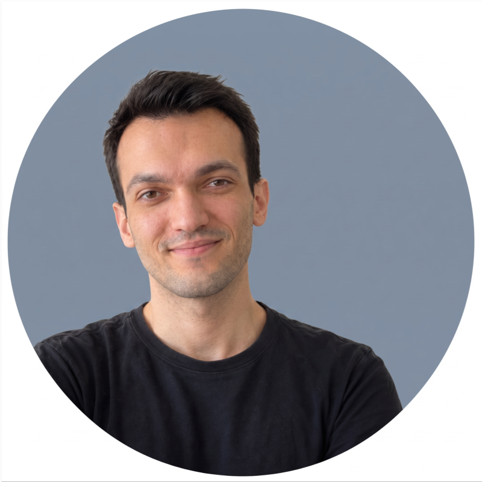

Elektrik-Elektronik Mühendisliği Öğrencisi
LinkedIn Profilim GitHub Projelerim E-posta GönderGömülü sistemler, uçta yapay zeka (Edge-AI), bilgisayarlı görü ve biyomedikal sinyal işleme alanlarına odaklanıyor; donanım ve yazılımı bir araya getiren yenilikçi mühendislik projeleri geliştiriyorum.
ESP32, mikrodenetleyiciler ve biyopotansiyel (EKG/EMG) analog sinyal koşullandırma.
ESP32 • Analog AFE • C/C++Sensör verilerinin buluta ihtiyaç duymadan doğrudan donanım üzerinde sınıflandırılması.
TinyML • DSP • Edge InferenceİHA ve otonom sistemler için gerçek zamanlı nesne tespiti, hedef takibi ve sensör füzyonu.
OpenCV • ROS • PythonFastAPI ile asenkron servis geliştirme, uydu veri analitiği ve kuantum algoritmaları.
FastAPI • Streamlit • QiskitYapay zeka destekli sistemlerin arka uç (backend) servislerinin geliştirilmesi ve bellek içi görev yönetimi için FastAPI tabanlı RESTful CRUD API mimarilerinin entegrasyonu.
Yaz stajı kapsamında kırsal bölgelerdeki enerji nakil hatları için Python ve QGIS tabanlı coğrafi güzergah optimizasyon aracı 'Kırsal Line' projesinin geliştirilmesi.
TEKNOFEST Sabit Kanatlı İHA yarışması için OpenCV kullanılarak gerçek zamanlı nesne tespiti ve otonom hedef takip algoritmalarının geliştirilmesi.
Analog sinyal koşullandırma, gerçek zamanlı biyometrik veri işleme ve doğrudan mikrodenetleyici üzerinde (TinyML) sınıflandırma sağlayan giyilebilir bitirme projesi.
Sentinel-2 uydu verilerini işleyerek Türkiye genelindeki metan gazı emisyonlarını izleyen ve simüle eden uydu tabanlı veri görselleştirme aracı.
Gömülü sistemler ve sensör uygulamaları odaklı yarışmada takım kaptanı olarak yer aldım ve finalist olma başarısı gösterdik.
Yapılandırılmış problem çözme, iş dünyasında adaptasyon ve dijital liderlik becerileri üzerine uluslararası eğitim programı.
TUSAŞ Motor Sanayii A.Ş. tarafından düzenlenen havacılık motorları tasarımı, üretimi ve kontrol sistemleri eğitim programı.
Qiskit ve Cirq kütüphaneleri ile kuantum programlama, kuantum devreleri ve algoritmaları üzerine yaz okulu eğitimi.
Bilgisayarlı görü, otonom robotik ve yapay zeka alanlarında öğrendiklerimi ve teknik içerikleri paylaştığım içerik sayfası.